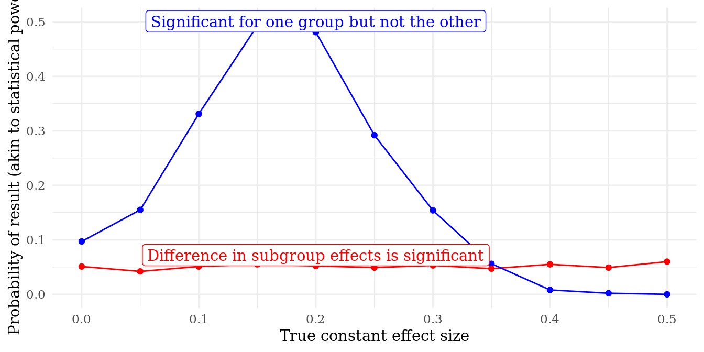

8.2 In DeclareDesign
The first choice in an answer strategy is to choose how you will construct your estimate for the inquiry. There are two established principles for selecting among possible estimation procedures, which apply both for qualitative and quantitative designs. The first is to draw on your model to learn what variables to select a conditioning strategy that avoids blocks back-door paths and does not condition on colliders. The second is to analyze your data according to your data strategy, accounting for how you stratified your data and the probabilities of sampling and assignment to avoid bias. A third principle highlighted by the MIDA structure is that your inquiry will also necessarily guide answer strategy choices. With an identical model and data strategy, the analysis strategy to target the sample average and the population average as inquiries would implies two different analysis strategies.
With an estimator in mind, the second task in choosing an answer strategy is describing uncertainty. In many cases, this will mean selecting an estimator for the standard error of the estimate and a method for constructing a confidence interval. The choice of standard error estimator is parallel to the choice of estimator: there is a true standard error of any estimator-estimand pair, and we want a standard error estimator with low bias and high precision. However, in trading off bias and variance in standard error estimators, we often tend to choose estimators that are conservative. Choosing a conservative estimator implies a scientific or moral preference for avoiding overconfidence in our estimates. The data strategy will often shape the choice of standard error estimator: how likely a given estimate is will be a function of features of the model, but also the probability of a given treatment assignment or sample.
In addition to an estimate and measure of uncertainty in it, we often need to construct a hypothesis test about the estimate in order to provide an answer to an inquiry. If the inquiry is of the form, “is the proportion of voters who support the candidate greater than half” or “is the treatment effect positive”, this implies a hypothesis test that provides a “yes” or “no” answer based on the data. The inquiry guides the choice of null hypothesis. Then a hypothesis testing framework, such as null-hypothesis testing or equivalence testing. The data strategy may also shape the choice of hypothesis testing method. Permutation inference a.k.a. randomization inference is a method for testing sharp null hypotheses implied by a particular sampling and/or treatment assignment procedure without relying on asymptotic inference.
We declare an answer strategy with an estimator for the average treatment effect and its standard error and a method for constructing confidence intervals and a null hypothesis as follows, using linear regressions:
This declaration asserts a choice about the model (linear regression using the built-in lm function), the functional form (linear terms for the treatment variable and a covariate), selects the coefficient of interest that forms our estimate (Z), and links that estimate to an estimate (“ATE”). The result is:
| estimator_label | term | estimate | std.error | statistic | p.value | conf.low | conf.high | estimand_label |
|---|---|---|---|---|---|---|---|---|
| estimator | Z | 1 | 0 | Inf | 0 | 1 | 1 | ATE |
Multiple estimates. Answer strategies can account how many statistical tests you are conducting. Often, when generating an answer to a single inquiry, we may construct multiple estimates that provide different types of answers of varying quality. When you present the results from many null hypothesis tests, the rate of falsely rejecting at least one of those tests even when all are true goes up, due to the multiple comparisons problem. If you plan to adjust for this problem, those adjustments are part of your answer strategy, because they will typically adjust the p-values you report and the decisions readers make with them. We may have three survey items that imperfectly estimate a latent quantity. In presenting the results, we could present three estimates from three regressions, we could adjust the three estimates using a procedure such as a family-wise error rate correction, or we could average the three items together into an index and present one estimate from one regression. Which of these three methods we select will change the properties of our answer strategy.
Analysis procedures. The final estimator that goes into a paper is neither the beginning nor the end of the answer strategy. Procedures, if any, by which you explore the data and determine a final set of estimates are part of the answer strategy. Procedures for summarizing multiple estimates are one example of many.
Commonly, the final estimator that is selected depended on a exploratory procedure in which multiple models are assessed, for example by comparing model fit statistics. The answer strategy of our research design is not to fit the final model — is it this multiple step if-then procedure. These procedures may be part of a prespecified analysis plan or they may be informal, so it may sometimes only be possible to declare the full design after the data is obtained. (We may find that a different analysis procedure that was not data dependent would have been preferable, if we diagnose the design after the fact.) The reason to declare the procedure rather than the final estimator is that the diagnosis of the design may differ. The procedure may be more powerful, if for example we assessed multiple sets of covariate controls and selecting the specification with the lowest standard error of the estimate. But the procedure may also exhibit poor coverage, accounting for these multiple bites at the apple.
We also sometimes find that the model we planned to run to analyze the data cannot be estimated. In these cases, there is an iterative estimation procedure in which a first model is run, changes to the specification are made, and a second or third model is presented as the result. The full set of steps — a decision tree, depending on what is estimable — is the answer strategy and we can evaluate whether it is a good one not only under the realized data but under other possible realizations where the decision tree would be the same but the decisions different.
In fact, there are examples of analysis procedures in most types of research, quantitative or qualitative. Many strategies for causal inference with observational data involve not only an estimation strategy but a set of falsification or placebo tests. The answer provided by these research designs depends in a crucial way on the results of these tests: if the tests fail, the design provides no definitive answer. In qualitative research, process tracing involves a set of steps, the results of which depend on information gathered in earlier steps. Many mixed methods strategies are also multi-step procedures. Nested designs involve running a quantitative analysis and then selecting cases on the basis of predictions from the regression. These designs cannot be assessed by considering a single step of the procedure in isolation.
We demonstrate the fact that the properties of procedures differ from the properties of a design with the final estimator in a simple example. We compare two possible estimation specifications, with and without covariates, to a procedure in which we run both models and report the model in our paper that has the lower p-value. The models are exactly the same, but the properties of the procedure differ from the properties of either of the two possible models. In particular, the procedure has higher power than either of the two models, but it exhibits poor coverage, which means we have a bias in our measure of uncertainty.
report_lower_p_value <- function(data){
fit_nocov <- lm_robust(Y ~ Z, data)
fit_cov <- lm_robust(Y ~ Z + X, data)
# select fit with lower p.value on Z
if(fit_cov$p.value[2] < fit_nocov$p.value[2]){
fit_selected <- fit_cov
} else {
fit_selected <- fit_nocov
}
fit_selected %>% tidy %>% filter(term == "Z")
}
design <-
declare_population(
N = 100, X = rbinom(N, 1, 0.5), u = rnorm(N)
) +
declare_potential_outcomes(Y ~ 0.25 * Z + 10 * X + u) +
declare_estimand(ATE = mean(Y_Z_1 - Y_Z_0)) +
declare_assignment(prob = 0.5) +
declare_reveal(Y, Z) +
declare_estimator(Y ~ Z, model = lm_robust, label = "nocov", estimand = "ATE") +
declare_estimator(Y ~ Z, model = lm_robust, label = "cov", estimand = "ATE") +
declare_estimator(
handler = label_estimator(report_lower_p_value),
label = "select-lower-p-value",
estimand = "ATE")
diags <- diagnose_design(design, sims = sims)| design_label | estimand_label | estimator_label | term | bias | se(bias) | rmse | se(rmse) | power | se(power) | coverage | se(coverage) | mean_estimate | se(mean_estimate) | sd_estimate | se(sd_estimate) | mean_se | se(mean_se) | type_s_rate | se(type_s_rate) | mean_estimand | se(mean_estimand) | n_sims |
|---|---|---|---|---|---|---|---|---|---|---|---|---|---|---|---|---|---|---|---|---|---|---|
| design | ATE | cov | Z | -0.0391521 | 0.3187862 | 1.0709462 | 0.1882101 | 0.0 | 0.0000000 | 0.9 | 0.0814267 | 0.2108479 | 0.3187862 | 1.1281218 | 0.2020015 | 1.0110888 | 0.0060038 | NaN | NA | 0.25 | 0 | 10 |
| design | ATE | nocov | Z | -0.0391521 | 0.3187862 | 1.0709462 | 0.1882101 | 0.0 | 0.0000000 | 0.9 | 0.0814267 | 0.2108479 | 0.3187862 | 1.1281218 | 0.2020015 | 1.0110888 | 0.0060038 | NaN | NA | 0.25 | 0 | 10 |
| design | ATE | select-lower-p-value | Z | -0.0786048 | 0.2198892 | 0.8416431 | 0.1976769 | 0.4 | 0.1596049 | 0.7 | 0.1468043 | 0.1713952 | 0.2198892 | 0.8832921 | 0.2088199 | 0.4337737 | 0.0954157 | 0 | NA | 0.25 | 0 | 10 |
Robustness checks are part of the answer strategy. Often, a single estimator is presented as the main analysis but then a series of alternative specifications are displayed in an appendix (such as including or excluding covariates and their interactions, different subsets of the data, or alternative statistical models). These differ from multiple estimates of a latent quantity in that the goal is not a primary analysis, but rather to support the main analysis. The purpose is to provide readers with evidence about how dependent the main results are on the specification, data subset, and statistical model used. The decision a reader makes from a paper depends not only on the main estimate but also the robustness checks. As a result, we want to assess the properties of the two together.
We illustrate with a simple analysis of the correlation between two variables y1 and y2, who have a true positive correlation. y2 is also a function of an observed covariate x and measurement error. Our main analysis is a bivariate regression predicting y2 with y1. We compare this answer strategy to one in which we run that analysis, but also run a robustness check controlling for x. We do this because as the analyst we are unsure of the true DGP and wish to demonstrate to reviewer’s that our results are not dependent on the functional form we choose.
bivariate_correlation_decision <- function(data) {
fit <- lm_robust(y2 ~ y1, data) %>% tidy %>% filter(term == "y1")
tibble(decision = fit$p.value <= 0.05)
}
interacted_correlation_decision <- function(data) {
fit <- lm_robust(y2 ~ y1 + x, data) %>% tidy %>% filter(term == "y1")
tibble(decision = fit$p.value <= 0.05)
}
robustness_check_decision <- function(data) {
main_analysis <- bivariate_correlation_decision(data)
robustness_check <- interacted_correlation_decision(data)
tibble(decision = main_analysis$decision == TRUE & robustness_check$decision == TRUE)
}
robustness_checks_design <-
declare_population(
N = 100,
x = rnorm(N),
y1 = rnorm(N),
y2 = 0.15 * y1 + 0.01 * x + rnorm(N)
) +
declare_estimand(y1_y2_are_related = TRUE) +
declare_estimator(handler = label_estimator(bivariate_correlation_decision), label = "bivariate") +
declare_estimator(handler = label_estimator(robustness_check_decision), label = "robustness-check")
decision_diagnosis <- declare_diagnosands(correct = mean(decision == estimand), keep_defaults = FALSE)
diag <- diagnose_design(robustness_checks_design, sims = sims, diagnosands = decision_diagnosis)We evaluate the two answer strategies in terms of the rate of correctly deciding there is a correlation between y2 and y1. In the main analysis, this means we judge there is a correlation when the p-value is below \(0.05\). In our robustness check answer strategy, we decide there is a correlation when both the main analysis and the robustness check return p-values below \(0.05\) on the coefficient on y1. We see that we are more likely to correctly judge there is a correlation in the simpler analysis strategy. This is because we added an additional criterion to our decision; both criteria, due to random noise, sometimes fail to reject the null of no correlation. Our second answer strategy is more robust in the sense that we have stronger evidence of a correlation when we run the two analyses together. But we are also less likely to decide (correctly) that there is a relationship. The robustness check is conservative. This exercise highlights that the properties of an answer strategy with secondary analyses will be different than the properties of the main analysis alone. If we planned (or conducted) robustness checks, we may wish to know how good the pair of strategies is together.
Using the MIDA way of thinking about designs, we discuss in the diagnosis section another notion of the “robustness” of a design. The typical way we think of robustness checks is multiple secondary analyses conditional on the observed data to build confidence in an analysis of that fixed data. However, the motivation for these robustness checks is uncertainty about the true data generating process. By declaring a design in terms of MIDA, we can think about the robustness of a single estimator to multiple possible true data generating processes. An estimator that is robust in this sense is one that is unbiased with low uncertainty regardless of, say, the true functional form between y1 and y2. To determine whether an estimator is robust, we can redefine a set of designs with different functional forms and assess the rate of correct decisions of our robustness checks strategy under each different model.
How answers are presented. How results are presented in tables and figures is an important part of the answer strategy. Considerable attention has been paid to how to display data, including arguments for switching from tables to graphs as the primary way to present statistical models (Kastellec) and for visually present raw data and models together (Coppock). The reason for this attention is that what inferences readers make when reading a paper depends not only on the statistical procedures used for estimation but the medium in which they are displayed. When numerical estimates are not provided at all, and only visualizations of results, clearly aesthetic choices about which estimates are displayed and even the width of axes will determine what the reader takes away from the answer strategy. This principle applies not just to tables and visualizations; how we describe results in the text of a paper also shapes readers’ inferences from the data. Registered reports are a format for preparing scientific papers that involves prespecifying not only the form of graphs and tables but the text the author plans to write depending on the results. In short, decisions made from your results by readers are not just a function of numerical estimates but how they are presented.
We explore this claim by comparing two possible graphical displays of conditional avareage treatment effects in an experiment. A common presentational format is to present the average treatment effect in one group and then the other along with confidence intervals. Inferences are made — either by the author, or by readers — as a function of whether one is significant and not the other. If that is true, the inference is that there is a difference in CATEs. An alternative is to present the estimated difference along with the two effects. The inferences can then directly be based on whether the confidence interval of the difference crosses zero. We illustrate these two visual answer strategies below:

We now demonstrate that the answer strategy on the left is flawed. XXYY describe sims.

When things do not go according to plan. To compare answer strategies, you can imagine the estimators that are possible if things go well as well as if things go wrong, when there is missing data or there are outliers in variables. A good answer strategy, which might be a single estimator, or a procedure if-this-then-that, can handle both states of the world. Procedures for addressing deviations from expected analyses are part of the answer strategy. Even in the absence of a preanalysis plan, we often have a way we expect to analyze the data if things go well. When they do not — because data are missing, there is noncompliance with an intervention, or the study is suspended for example — the answers will change. These procedures determine the answer the study provides (or in some cases does not), so are part of the answer strategy. Standard operating procedures (lin and green) are documents that systematize these procedures in advance.